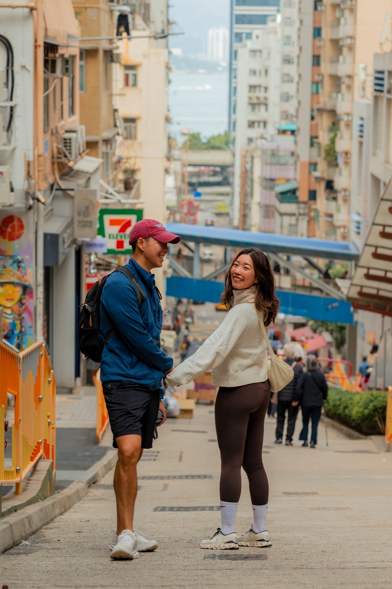
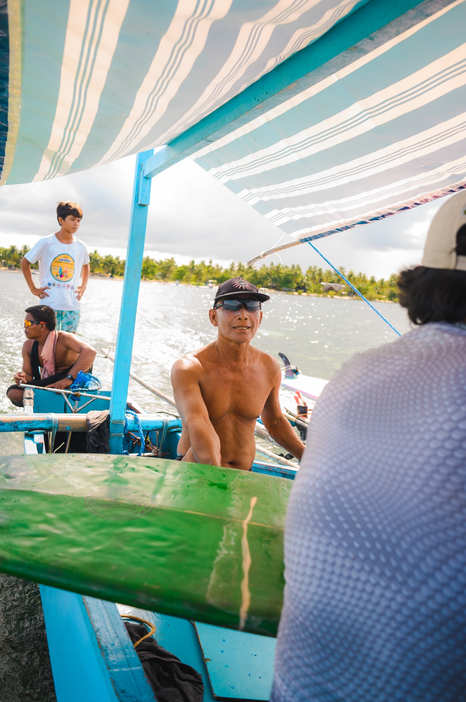
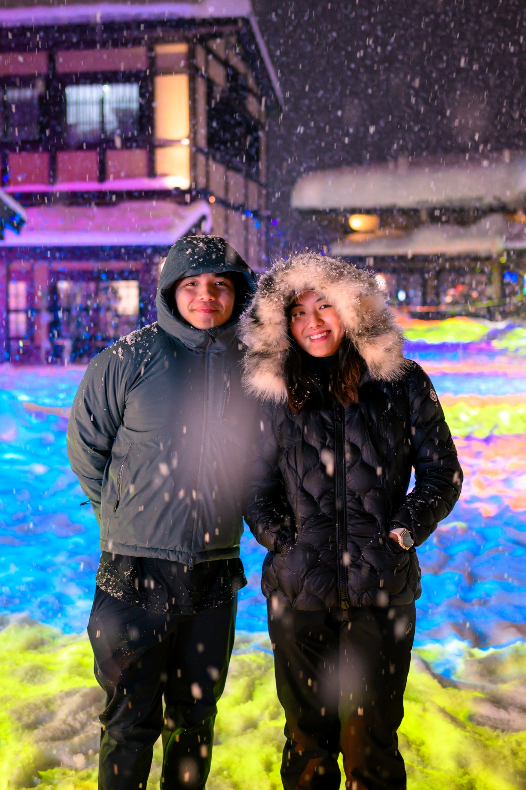
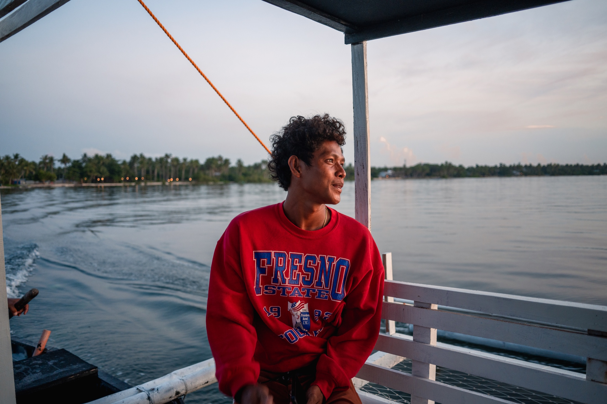
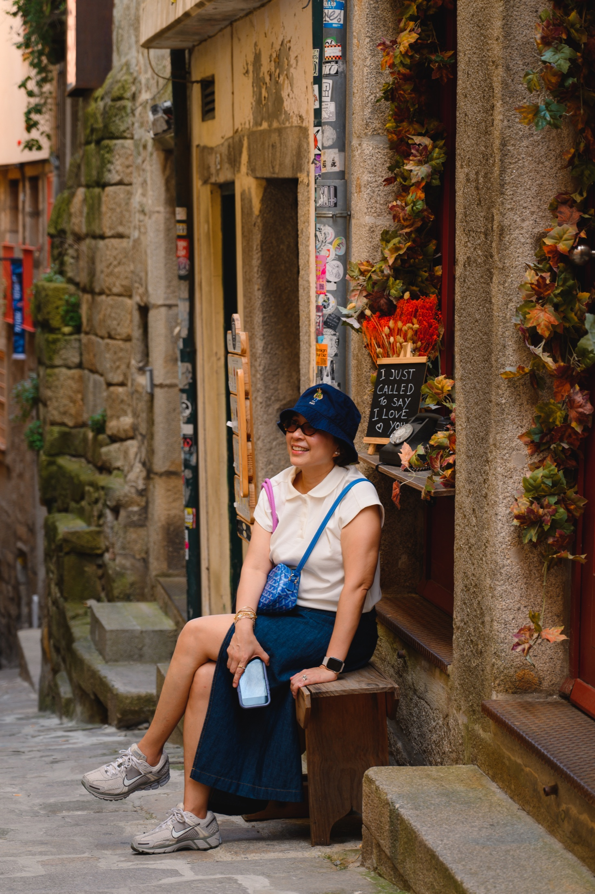
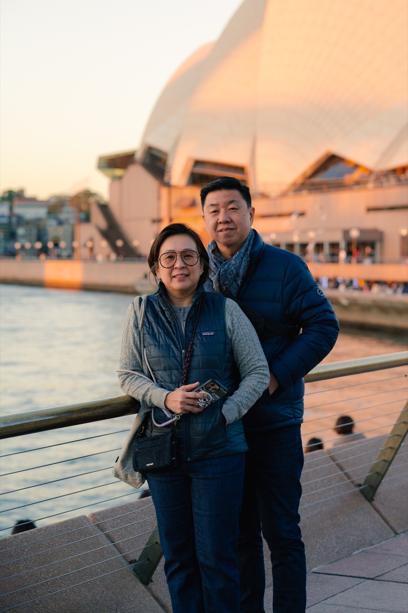
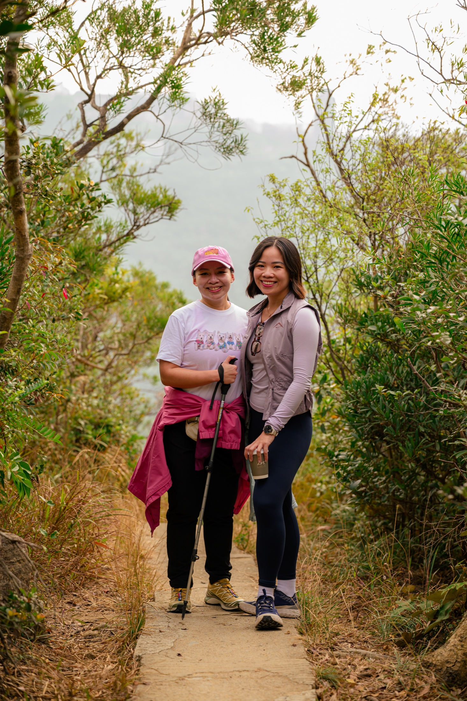
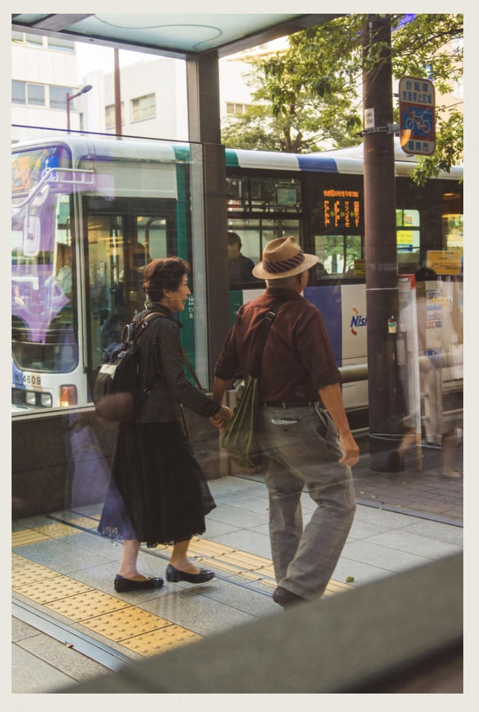

People
Faces I remember.
Portraits, passing gestures, and the people who make a place feel alive.












People
Portraits, passing gestures, and the people who make a place feel alive.







